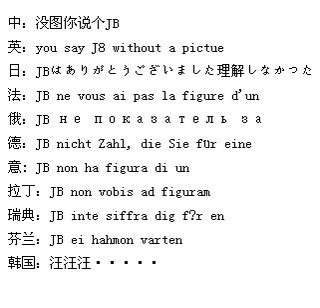

第二届青岛市智力运动会跳棋五子棋竞赛规程
#1 第二届青岛市智力运动会跳棋五子棋竞赛规程 作者：聊城蓝剑 发表时间：2012-9-15 9:31:14
第二届青岛市智力运动会
一、主办单位：
青岛市体育局. 青岛市体育总会. 青岛市总工会
青岛市妇联.
青岛市委高校工委.
青岛市教育局
二、承办单位：
青岛市国际跳棋协会（ 筹）
三、协办单位：
青岛桂海国际跳棋俱乐部
四、竞赛日期和地点：
竞赛日期：2012年 9月23日上午8:30 --
竞赛地点：青岛市第二工人文化宫
五、比赛项目 ：国际跳棋、中国跳棋、中国五子棋
报名办法：
竞赛办法：
（一）参照执行总局棋牌中心印发的《中国国际跳棋竞赛规则（暂行）》；
（二）采用电脑积分编排制。根据参赛人数确定比赛轮次。
（三）男女混合编组，分别计算男女个人及团体成绩。（团体成绩以各单位参赛个人成绩排名靠前的名次数相加，总分值少者列前。同分则依次对比单位中最好的个人成绩）；
（四）比赛采用限时制：双方共用30分钟后，各限时10分钟包干。
1 、混合团体赛
2 、男、女个人赛（不分年龄）
3 、每单位只计算一支混合团体成绩（2男2女）。
4 、个人、单位均可报名，人数不限。
竞赛办法：
（三）中国五子棋
1 、混合团体赛
2 、男、女个人赛（不分年龄）
3 、每单位只计算一支混合团体成绩（2男2女）。
4 、个人、单位均可报名，人数不限。
竞赛办法：
1 、比赛实行一手交换，无禁手。先连5者胜。（即平时游戏规则）
2 、根据参赛人数确定比赛轮次。
3 、每轮下两局，互换先手，计大分。
4 、比赛采用限时制：双方共用20分钟后，各限时5分钟包干。
5 、依个人名次计团体成绩。
六、录取名次与奖励：
( 一)各项目团体录取前6名、个人录取前8名。参加比赛的人(对、队)数不足6人(对、队)的小项，只录取前3名，不足录取名次的按照N-1执行。
（二）依据《中国国际跳棋棋手技术等级标准》，所有国际跳棋参赛选手都可以申办：一至六级棋士称号（等级证书由中国棋院统一印制和发放）；已有等级称号的棋手可以依据比赛成绩升级。
( 三)比赛设：优秀辅导教师奖、最佳组织奖，评选办法另定。
七、报名办法：
1 、报名人数不限。
3 、团体、个人报名电子版发：青岛桂海国际跳棋俱乐部
电子版报名邮箱：15066863123@163.com
联系电话：15066863123.赵桂海
八、其他：
（一）少儿组参赛队时，请严格按照各组别年龄范围准确报名。
( 二) 参赛人员必须已参加人身意外伤害保险（含参赛期间）。
九、未尽事宜，另行通知
#2 Re:第二届青岛市智力运动会跳棋五子棋竞赛规程 作者：掌棋宣传员 发表时间：2012-9-15 11:25:13
#3 Re:第二届青岛市智力运动会跳棋五子棋竞赛规程 作者：聊城蓝剑 发表时间：2012-9-30 9:08:10
今年7月启动的第二届青岛市智力运动会由：青岛市体育局、青岛市体育总会、青岛市总工会、青岛市妇联、青岛市教育局联合主办。
国际跳棋和五子棋项目比赛承办单位：青岛市国际跳棋协会（筹）。
协办单位：青岛同步传媒集团、青岛桂海国际跳棋俱乐部。
国际跳棋和五子棋的比赛于9月23日在第二工人文化宫落下帷幕，来自全市7个区市的近50个单位的230多棋手参加了比拼。
国际跳棋团体赛前三名:
幼儿园组：永宁路小学幼儿园、大风车幼儿园胶州园、新贵都幼儿园、
一二年级组：市南区第二实验小学、胶州向阳小学、洛阳路第二小学；
三四年级组：胶州向阳小学、市南区第二实验小学、太平路小学；
五六年级组：市南区第二实验小学、胶州英姿学校、宜阳路小学；
初中以上年龄组：胶州英姿学校、胶州第十中学。
国际跳棋个人赛男女前三名:
幼儿园组:王奕轩、于泉、王昱清和迟心田、宋秋然、陈慧赢，
一二年级组:王玺钰、齐家瑞、颜子超和耿虹歆、于雅雯、刘颖宜，
三四年级组:马林扬、卢洋洲、石舒元和王玉菡、李昕怡、姜懿珊，
五六年级组:杨亨瑞、程实、王乔正和刘玉蕊、陈昕宜、楮瑜，
初中以上组:张新鑫、杨世宾、高维星和高阳、王月琪、吕明燕。
五子棋团体前三名:
小学组:定陶路小学、永宁路小学、太平路小学和榉园学校，
初中以上组：青岛大学、滨海学院。
男女个人前三名：
小学组：宋玉来、朱彦栋、王悦霖和鲍睿洁、李子萌、陈睿。
初中以上年龄组：金奕、赵昊天、祝萌和张文浩 。
#4 Re:第二届青岛市智力运动会跳棋五子棋竞赛规程 作者：天下至尊 发表时间：2012-10-3 18:54:58
支持一下，结果怎么样了？